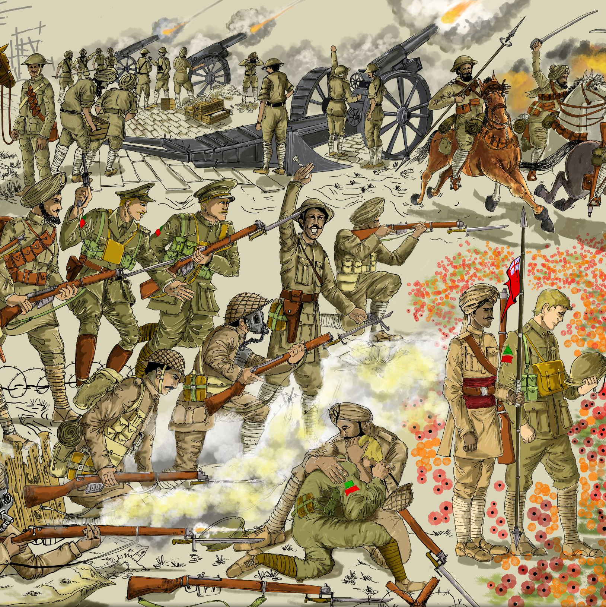
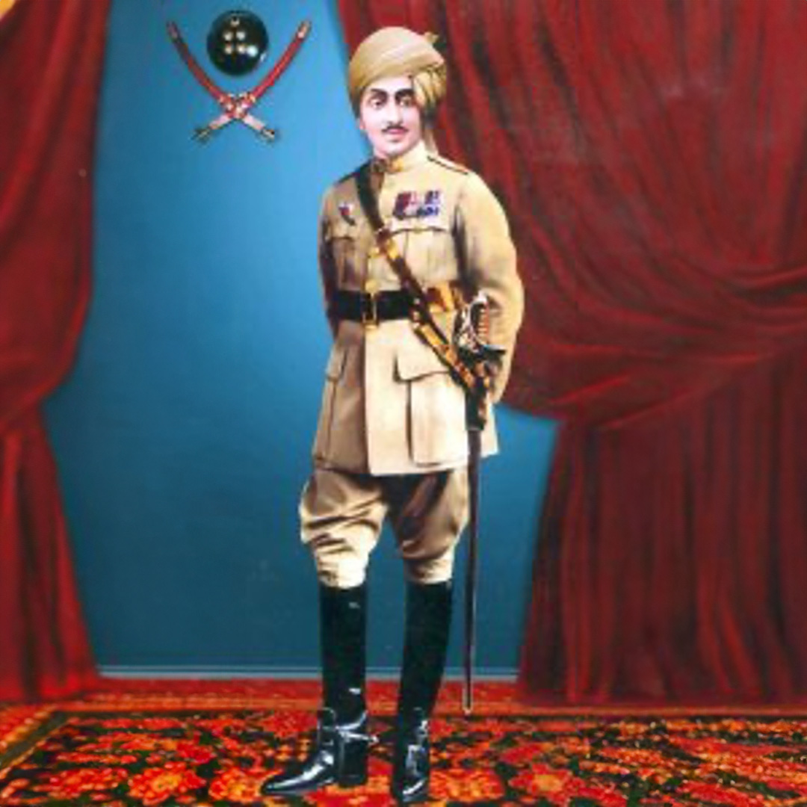
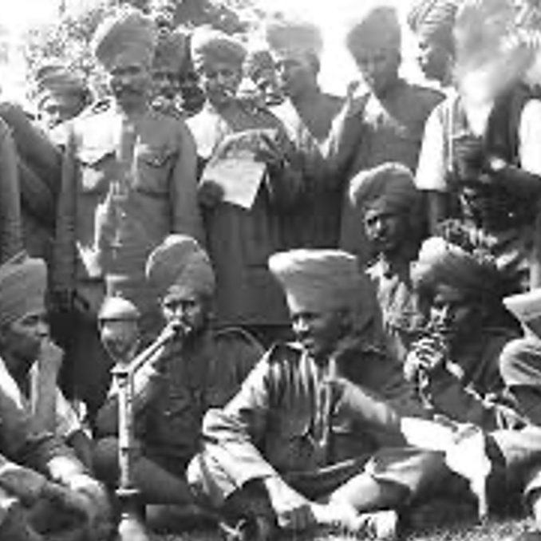
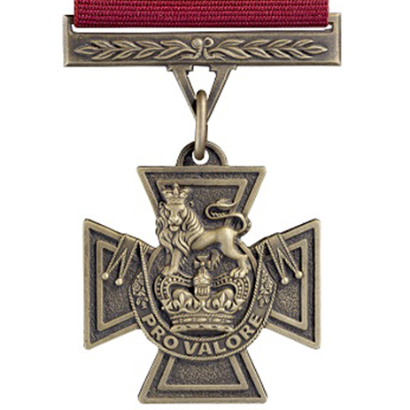
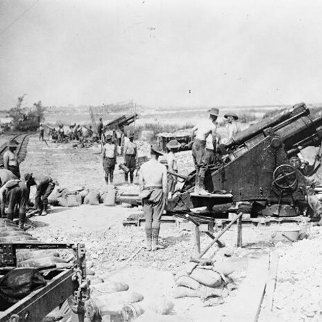
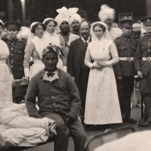
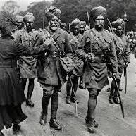

Brotherhood on the Battlefield
The deep bond between Indian and Canadian soldiers during WW1.
During World War I, over 135,000 Indian soldiers fought alongside
Canadian troops. These men, coming from different parts of the
British Empire, developed a strong camaraderie in the trenches.
Whether enduring brutal winter conditions in Europe or facing poison
gas attacks, their shared hardships created unbreakable bonds of
brotherhood.

The Hero of Haifa
Major Dalpat Singh Shekhawat and the last cavalry charge in military
history.

On September 23, 1918, Major Dalpat Singh Shekhawat led the
legendary Jodhpur Lancers in the last successful cavalry charge in
military history. Against machine-gun fire, they stormed Haifa,
capturing the city from Ottoman forces. This victory not only
secured Haifa but also saved the Bahá'í leader from execution.
Letters from the Trenches
Personal letters from Indian and Canadian soldiers revealing their
thoughts and struggles.

Through letters sent home, soldiers shared their emotions, fears,
and experiences. One Rajput soldier wrote, "This is not war. It is
the ending of the world." A wounded Sikh lamented, "No sound man can
return to India." These letters capture the resilience, pain, and
humanity of the soldiers who fought in the Great War.
The Forgotten Victoria Cross
Sepoy Khudadad Khan: The first Indian recipient of the Victoria
Cross.

In October 1914, Sepoy Khudadad Khan of the 129th Baluchis became
the first Indian soldier to receive the Victoria Cross. Despite
being gravely wounded, he continued manning his machine gun, holding
off the enemy long enough for reinforcements to arrive. His bravery
at the First Battle of Ypres was instrumental in preventing a German
breakthrough.
The Battle of Neuve-Chapelle
How Indian soldiers played a decisive role in a major Allied
victory.

In March 1915, the Indian Corps was at the forefront of the Battle
of Neuve-Chapelle in France. Their relentless assault helped break
through German defenses, achieving a rare victory for the Allies.
However, the triumph came at a heavy cost, with thousands of Indian
troops making the ultimate sacrifice. Their courage demonstrated
their commitment to the war effort.
Healing the Wounded
Indian medical staff’s crucial role in saving lives during WWI.

Alongside the soldiers in the trenches, Indian doctors, nurses, and
stretcher-bearers played a critical role in World War I. They
treated the wounded under fire, often risking their own lives to
save others. Their dedication was vital in maintaining morale and
keeping thousands of soldiers alive in the brutal conditions of war.
The Sikh Soldiers of Flanders
The courage of Sikh regiments in the freezing trenches of Belgium.

Sikh regiments were among the first Indian troops sent to the
Western Front. In the bitter cold of Flanders, they fought alongside
Canadian and British soldiers, facing relentless artillery
bombardments and gas attacks. Despite the harsh conditions, their
discipline and bravery earned them great respect, with some
regiments suffering over 80% casualties while holding their ground.